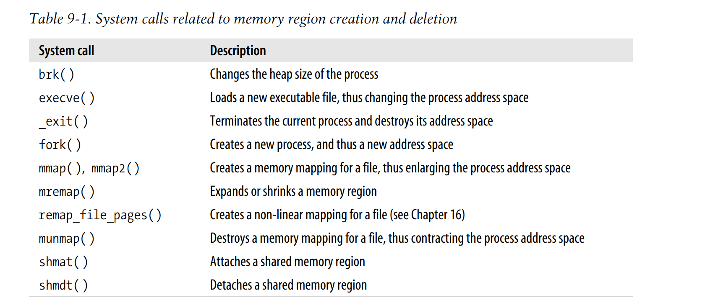
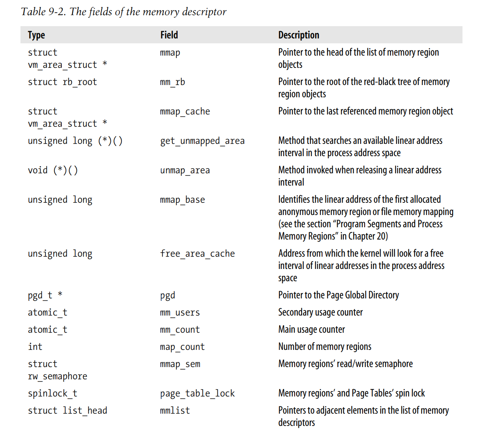
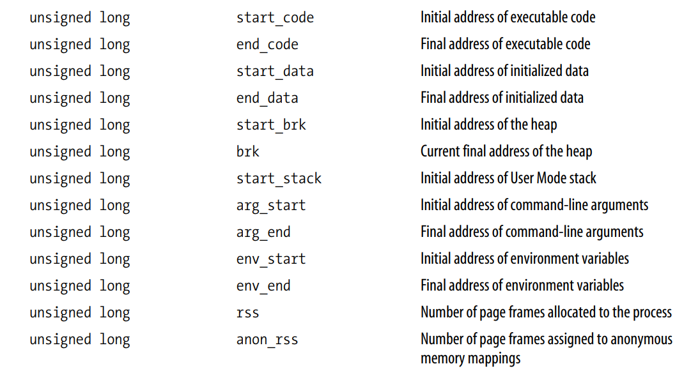
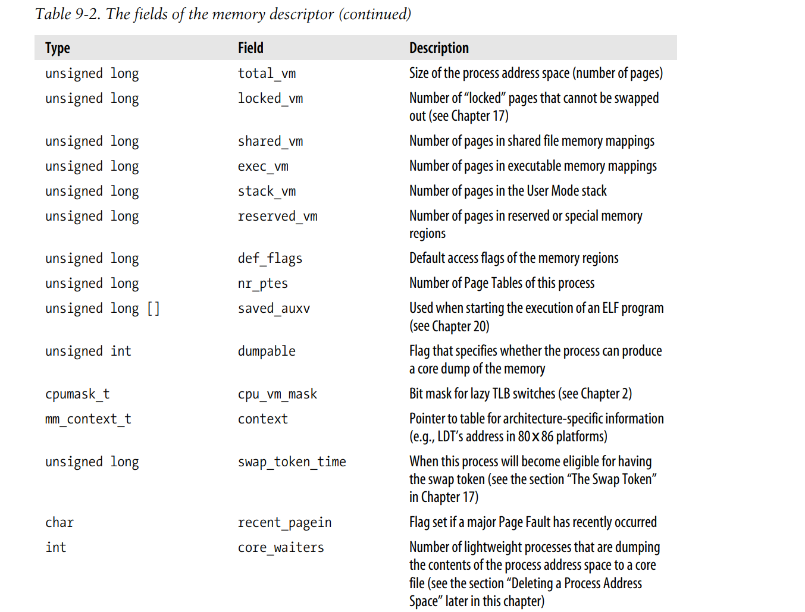
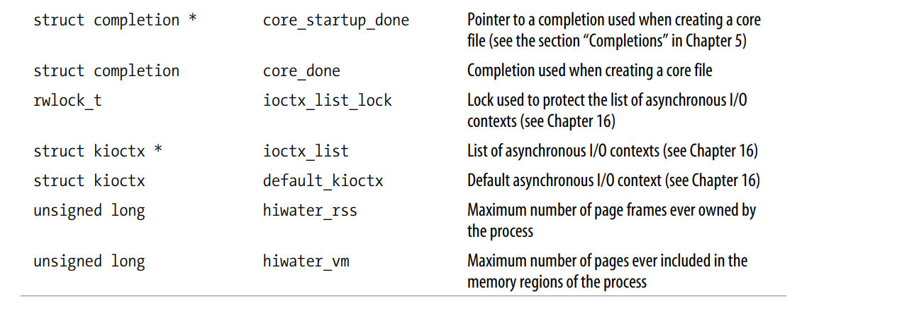
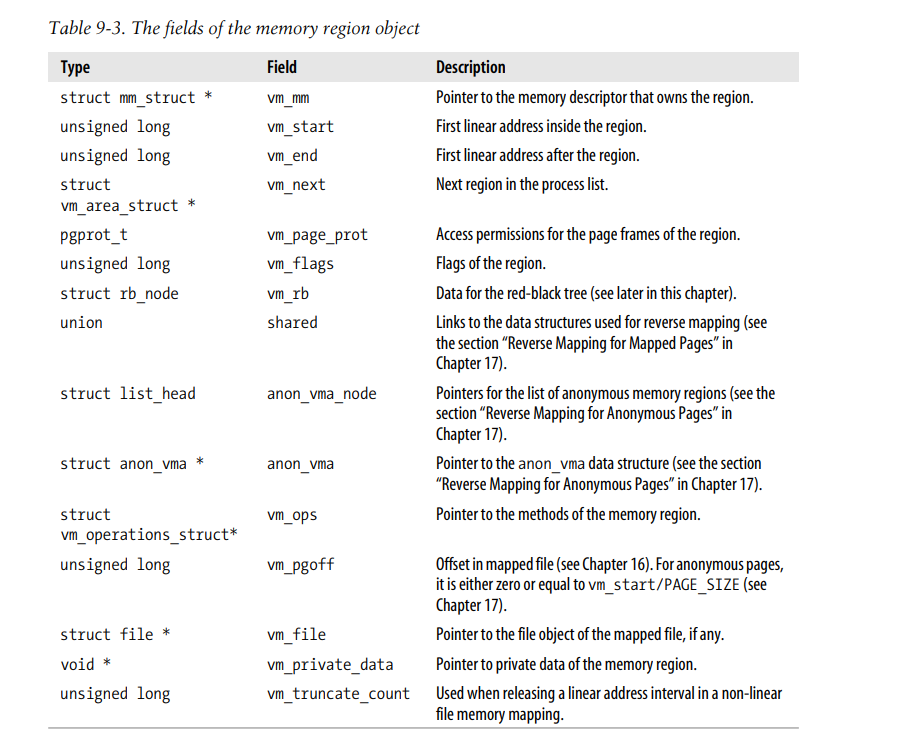
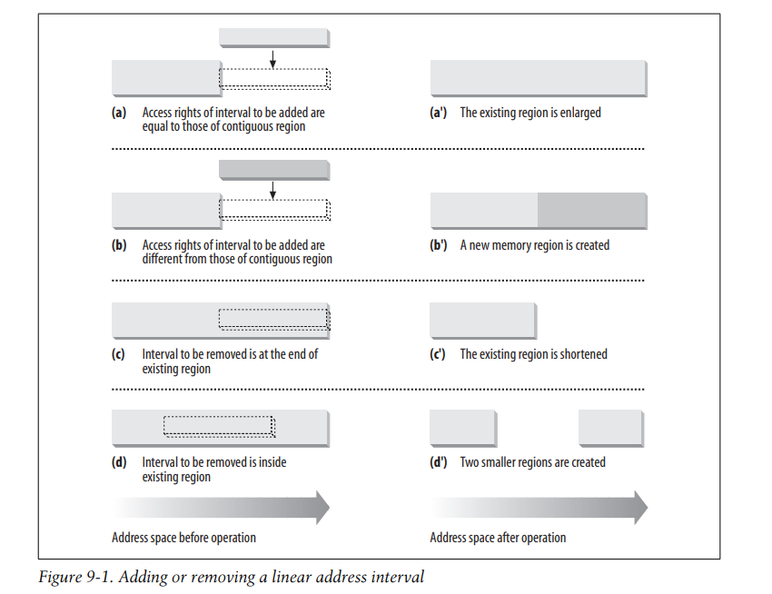
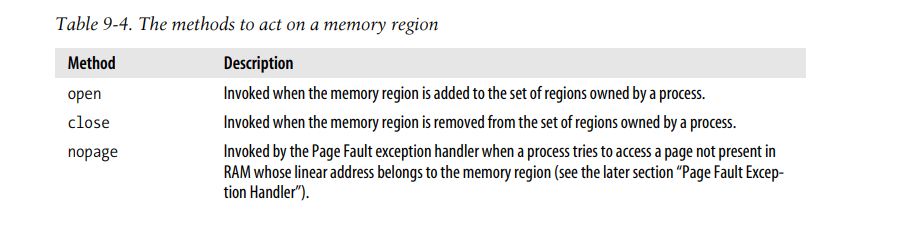
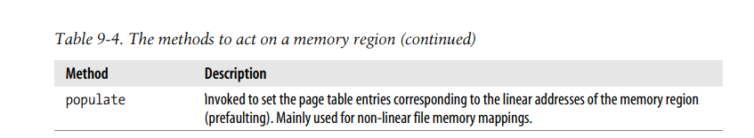
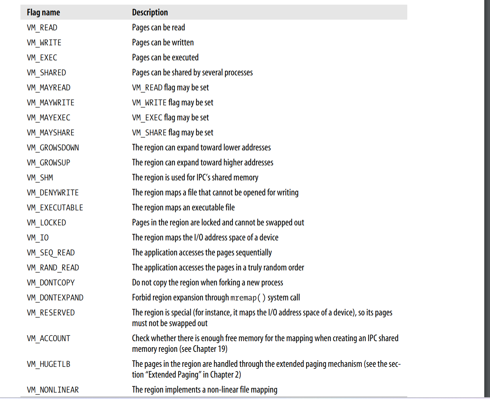

之前说过，32位的线性地址空间，前3G是用户地址空间，最后1G是内核地址空间。 这一章讲的是内核如何管理用户地址空间。
当内核需要动态内存时，它一般会调用以下三类函数：
- __get_free_pages()或者alloc_pages()来获取连续的pages frame, from the zoned page frame allocator
- kmem_cache_alloc()或者kmalloc():从 specific 或者general slab cache中获取object.
- vmalloc()或者vmalloc_32(): 获取非连续内存区域。（vmalloc_32 从 ZONE_NORMAL和ZONE_DMA中获取，vmalloc 首先从 ZONE_HIGHMEM中获取）
当请求满足后，这些函数要么返回page descriptor的指针，要么返回起始的线性地址。
当用户程序动态申请内存时，它并不会获取page frames,反而，内核会给他分配一段线性地址，连入进程地址空间。 这段线性地址叫做 memory region.而实际page frames的分配，是通过 Page Fault exception handler完成的。
The Process’s Address Space
一个进程的地址空间包括该进程可以访问的所有线性地址。
每个进程的地址空间都不一样，两个进程地址空间中相同的线性地址，彼此之间也毫无关系。
内核也会动态地给进程的地址空间增加或减少线性地址区域。
进程地址空间是由一段一段的线性地址区域组成，每一段地址区域，叫做memory region,一个memory region 通常包括起始线性地址，长度，和一些访问权限等属性。memory region的起始地址，长度，都是4096的倍数。因此每个memory region对应整数个page frames。
进程会在以下几种情况下获取新的memory region：
- 当用户在shell中输入命令，shell进程会创建新的进程来执行这个命令程序，因此需要新的地址空间
- 一个进程通过调用exec，运行一个新的程序，进程的id没有变，但是旧的地址空间被释放，新的地址空间被赋给该进程
- 一个进程通过memory mapping 映射一个文件，或者文件的一部分，内核需要给进程创建新的memory region用于映射文件
- 进程的user mode stack空间一直在增长，直到栈的地址被用完了，这时候，内核需要扩展栈空间对应的memory region
- IPC-shm。当进程创建shm来跟别的进程共享内存，用于进程间通信时，对于这段共享内存，需要创建对应的memory region
- 进程运行时，可能需要通过malloc()函数来获取堆空间，对应的memory region可能也会扩展。
以下是跟地址空间的增加，减少，变动有关的系统调用

内核需要准确的知道当前进程拥有的地址空间，当进程运行时，出现addressing error时， page fault exception handler需要能区分以下两种情况
- 这个addressing error是programming error,比如地址越界，页面不可写啊等等。
- 这个地址在进程的地址空间中，但是还没有分配物理页面。这种从程序的角度不算出错，page fault exception handler会给该地址分配物理页面，让程序继续运行。这也叫demand paging.
The Memory Descriptor
一个进程的地址空间，用 memory descriptor描述，其类型是mm_struct,各字段如下。 每个进程的进程描述符中的mm字段，指向其memory descriptor.




所有的memory descriptor都连接在双链表中，每个描述符中的mmlist字段连接相邻的memory descriptor.
init_mm是init_task进程的memory descriptor，在系统启动时初始化。
mm_struct中的mm_users字段，存储当前有多少lightweight processes 共享该mm_struct.
mm_count is the main usage counter of the memory descriptor.如果mm_count被减为0，descriptor is deallocated。
mm_users与mm_count的区别，如果有lightweight processes 使用该mm_struct，mm_users会加1，但是所有的mm_users只代表一种使用mm_count的方式，如果mm_users是从0曾到1，mm_count会加1，后续的mm_users的增加，不会增加mm_count。同理，只有mm_users减为0，mm_count才会减1.
Memory Descriptor of Kernel Threads
Kernel Thread只运行在kernel mode下，所以只会访问内核地址空间，也就是在TASK_SIZE (same as PAGE_OFFSET, usually 0xc0000000)之上的线性地址。相比于普通的进程，kernel thread不使用memory regions,只需要访问kernel page table即可。
因为所有进程的page table中，内核地址空间部分都是一样的，所以kernel thread无论使用哪个page table都一样。为了避免useless TLB flushes，kernel thread使用的是被切换的进程的page table.
每个进程的进程描述符中有两个指向memory descriptor的指针，mm和active_mm。mm points to the memory descriptor owned by the process，active_mm points to the memory descriptor used by the process when it is in execution 。对于普通进程来说，这两个字段指向同一个memory descriptor, 而kernel thread不拥有自己的memory descriptor，因此其mm字段为NULL,When a kernel thread is selected for execution, its active_mm field is initialized to the value of the active_mm of the previously running process.
当处于kernel mode的某个进程，如果修改了内核地址空间的地址映射，也就是修改了内核线性地址对应的页表项，这种改变应该立刻对所有的进程生效。当进程处在kernel mode时，其对内核线性地址映射的修改，修改的都是内核页表，这组内核页表的根页表是swapper_pg_dir，二级三级页表都可以从该根页表访问到。进程的页表项，其中内核地址空间对应的根页表项应该与内核根页表项相同，最终还是访问相同的二级或者三级页表。当内核根页表被修改后，通过进程的根页表做地址访问会报错，在page fault handler中会修正进程根页表对应的部分。但根页表项部分是不会更改的
Memory Regions
memory region由vm_area_struct表示，其字段如下

一个进程的所有memory region,其线性地址范围不会重叠，并且内核会试图将相邻的memory region合并，前提是这两个region的访问权限是相同的。如下图所示，当试图给进程增加一段线性地址时，如果这段线性地址与某个已经存在的memory region相邻，并且这段线性地址的访问权限与相邻的memory region相同，则直接拓展这个已经存在的memory region即可，如图a.如果不能合并，则需要另外创建新的memory region,如图b. 当从进程的地址空间中移除一段线性地址时，如果这段线性地址在某个memory region中，如图c, 只需要修改该memory region的大小即可。而如果是图d的情况，则会生成两个小的memory region,也就是需要创建一个新的memory region.
(Removing a linear address interval may theoretically fail because no free memory is available for a new memory region descriptor.)

The vm_ops field points to a vm_operations_struct data structure, which stores the methods of the memory region. Only four methods—illustrated in Table 9-4—are applicable to UMA systems.


Memory Region Data Structures
一个进程的所有memory regions按照线性地址的升序，连接在一个simple list中。 vm_area_struct中的vm_next字段指向下一个vm_area_struct。进程的memory descriptor中的mmap指向该链表的头节点。map_count字段为该进程拥有的memory regions数量.
内核需要经常执行，根据某个线性地址，找到其所在的memory region.如果一个进程的memory regions数量比较少，比如几十个，则线性查找还是比较快速的，但是如果数量很多，such as object-oriented databases or specialized debuggers for the usage of malloc(),that have many hundreds or even thousands of regions,这时候线性查找的效率就不可忍受了。所以，linux2.6同时将所有的memory regions组成红黑树结构。
memory descriptor中的mm_rb指向红黑树的根节点。每个memory regions中的vm_rb字段，组成红黑树的每个节点。
通常，红黑树用于根据某个地址，定位其所在的memory region,而链表用来遍历所有的region
Memory Region Access Rights
memory region 中的flag，存储在vm_area_struct中的vm_flags字段中
其中一些标志，跟memory region中的pages有关，比如pages中存储的是什么内容，这些pages的访问权限，是可读，可写，可执行等。还有一些标志跟memory region本身的属性有关，比如这个memory region的大小可以如何扩展。 这些flag如下表所示：

Memory Region Handling
do_mmap()函数为当前进程创建并初始化新的linear Address Interval.
其参数如下：
file,offset: 如果该memory region是用于映射文件的，则需要传入这两个参数
addr: 从该线性地址开始查找memory region
len:memory region的长度
prot:该memory region的访问权限，PROT_READ, PROT_WRITE, PROT_EXEC, and PROT_NONE
flag:
- MAP_GROWSDOWN, MAP_LOCKED, MAP_DENYWRITE, and MAP_EXECUTABLE：和memory region中的VM_XXX的意思一样
- MAP_SHARED and MAP_PRIVATE：前者表示memory region中的pages可以几个进程共享，后者表示是该进程独有的。对应memory region中的VM_SHARED标志
- MAP_FIXED: 分配的memory region的初始地址一定要是addr
- MAP_ANONYMOUS: No file is associated with the memory region
- MAP_NORESERVE: The function doesn’t have to do a preliminary check on the number of free page frames.
- MAP_POPULATE: 这个标志只对文件映射和IPC shm有效，表示其memory region的page frames要提前分配好。
- MAP_NONBLOCK: 只有在MAP_POPULATE设置了的情况下，该标志才有效。表示在分配page frames时不阻塞当前进程。
do_mmap()操作的是地址空间，其分配的liner address interval不一定会对应一个新分配的memory region，可能是和前后相邻的memory region的合并（如果权限相同的话），也可能需要分配的地址空间本身跨越了多个权限相同的memory region，则会先删除这些memory region再创建。
do_munmap()函数将删除当前进程的linear address interval.
其参数是：
mm:指向进程的memory descriptor.
addr: 起始地址
len: 长度
这个被删除的linear address interval可以不是对应一个memory region,它可能是一个memory region中间的一部分，或者跨越两个或多个memory region.
Page Fault Exception Handler
linux page fault exception handler 必须要能够区分是programming error导致了page fault exception,还是缺页导致了page fault exception.
do_page_fault()函数的参数如下
- regs:指向pt_regs的指针，pt_regs中存储当异常发生时，处理器中寄存器的值。
- 3-bit error_code, 当异常发生时，这个error_code被control unit压栈。
每个bit的含义如下
- bit0: 为0表示异常是由于page frames不存在，也就是page table entry中的Present标志为0.为1表示异常是由于invalid access right引起的。
- bit1: 为0表示异常是by a read or execute access 为1表示异常是caused by a write access
- bit2: 为0表示异常发生时，处理器在kernel mode,否则在user mode.
do_page_fault()要做的第一件事，就是获取引起异常的访问地址。这个地址，在异常发生时，由cpu的control unit存储在cr2控制寄存器中。
asm("movl %%cr2,%0":"=r" (address));
if (regs->eflags & 0x00020200)
local_irq_enable();
tsk = current;
这个asm汇编拓展，将线性地址存储到了address 本地变量中。 接下来，do_page_fault()检查该地址是否属于内核地址空间
info.si_code = SEGV_MAPERR;
if (address >= TASK_SIZE ) {
if (!(error_code & 0x101))
goto vmalloc_fault;
goto bad_area_nosemaphore;
}
如果error_code中，bit0和bit2都为0，也就是处理器在kernel mode，并且page frame不存在，跳转到 vmalloc_fault，处理的是进程页表的内核地址空间对应的page global directory 的页表项与内核页表的相应部分对不上，也就是page global directory 的页表项为空。这时候直接拷贝内核页表的对应部分到进程页表中。
否则跳转到bad_area_nosemaphore。如果是在用户态访问的，直接给进程发送SIGSEGV信号并返回。如果是在内核态访问的，因为bit0是1，也就是不是由于缺页导致的，那就是programming error了，这时候需要区分这个错误的访问，是syscall导致的，还是kernel bug,并做相应的处理
接下来，走到另一个分支，也即是访问的地址属于进程地址空间，这时候需要检查这个异常发生时，上下文是否in_atomic,也就是是否属于interrupt,softirq,critical region,或者是kernel thread引起的异常。（kernel thread的mm为NULL)
if (in_atomic( ) || !tsk->mm)
goto bad_area_nosemaphore;
The in_atomic() macro yields the value one if the fault occurred while either one of the following conditions holds:
- The kernel was executing an interrupt handler or a deferrable function.
- The kernel was executing a critical region with kernel preemption disabled
如果异常确实发生在interrupt handler， deferrable function，critical region 或者kernel thread中，这时候这个地址就错了，因为以上几种执行路径中，不会访问用户地址空间的地址，kernel thread永远只运行在kernel mode下，永远不会访问用户地址空间，而其他的3个kernel control path,如果访问用户地址空间，则有可能导致当前kernel control path被阻塞。
这时候在 bad_area_nosemaphore 中的处理， 处于内核态，区分是syscall还是kernel bug
现在我们假设if (in_atomic( ) || !tsk->mm)不成立，也就是访问的地址addr属于用户地址空间，到目前为止还没问题，接下来就要将该地址与进程的memory regions比较了。
vma = find_vma(tsk->mm, address);
if (!vma)
goto bad_area;
if (vma->vm_start <= address)
goto good_area;
bad_area的处理和bad_area_nosemaphore一样，如果是在用户态访问的，直接发送SIGSEGV,如果是在内核态访问的，区分是kernel bug还是syscall
而 good_area处的代码，最终可能会执行demanding paging或者copy on write
如果以上两个if都不满足，也就是address在memory region中间的某个空闲区域，这时候还需要做个额外的检查，这个addr可能是push指令超过了栈空间，
如果一个region映射一个栈，那么它的vm_end是固定的，vm_start可以往低地址方向扩展。也就是region descriptor中的VM_GROWSDOWN标志被设置了。
region的大小与栈大小的关系
region的大小是页面大小的整数倍，而栈大小没有这个限制
当栈执行pop操作时，其所在的region大小并不会被缩小。也就是说，一个程序的栈所映射的memory region,其大小只会随着push操作引发的exception而扩展，当执行pop操作时，虽然栈大小收缩了，但是其memory region大小不会变。
It should now be clear how a process that has filled up the last page frame allocated to its stack may cause a Page Fault exception: the push refers to an address outside of the region (and to a nonexistent page frame). Notice that this kind of exception is not caused by a programming error; thus it must be handled separately by the Page Fault handler.
do_page_fault()函数中对这一情况的检查如下
if (!(vma->vm_flags & VM_GROWSDOWN))
goto bad_area;
if (error_code & 4 /* User Mode */
&& address + 32 < regs->esp)
goto bad_area;
if (expand_stack(vma, address))
goto bad_area;
goto good_area;
bad area & bad_area_nosemaphore的处理
如果exception发生在用户模式下，则给当前进程发送SIGSEGV信号
bad_area:
up_read(&tsk->mm->mmap_sem);
bad_area_nosemaphore:
if (error_code & 4) { /* User Mode */
tsk->thread.cr2 = address;
tsk->thread.error_code = error_code | (address >= TASK_SIZE);
tsk->thread.trap_no = 14;
info.si_signo = SIGSEGV;
info.si_errno = 0;
info.si_addr = (void *) address;
force_sig_info(SIGSEGV, &info, tsk);
return;
}
如果异常发生在内核模式下，则还需要判断一下两种情况
- The exception occurred while using some linear address that has been passed to the kernel as a parameter of a system call.
- The exception is due to a real kernel bug.
如果是第一种，it jumps to a “fixup code,” which typically sends a SIGSEGV signal to current or terminates a system call handler with a proper error code
In the second case,the function prints a complete dump of the CPU registers and of the Kernel Mode stack both on the console and on a system message buffer; it then kills the current process by invoking the do_exit( ) function. This is the so-called “Kernel oops” error, named after the message displayed. The dumped values can be used by kernel hackers to reconstruct the conditions that triggered the bug, and thus find and correct it.
good_area的处理
如果addr在进程地址空间中，则do_page_fault()执行good_area处的代码
good_area:
info.si_code = SEGV_ACCERR;
write = 0;
if (error_code & 2) { /* write access */
if (!(vma->vm_flags & VM_WRITE))
goto bad_area;
write++;
} else /* read access */
if ((error_code & 1) || !(vma->vm_flags & (VM_READ | VM_EXEC)))
goto bad_area;
error_code & 2==1:表示是写操作，如果页面不能写，go to bad area
否则的话是读操作，!(vma->vm_flags & (VM_READ | VM_EXEC))==1表示页面不能读，go to bad area,error_code & 1 ==1,表示invalid access right,也就是page frame对应的页表项，User/Supervisor清空，只能kernel mode访问，而exception发生时是user mode,go to bad area
( However, this case should never happen, because the kernel does not assign privileged page frames to the processes)
如果顺利通过两个goto bad_area的判断，最终调用handle_mm_fault( ):
survive:
ret = handle_mm_fault(tsk->mm, vma, address, write);
if (ret == VM_FAULT_MINOR || ret == VM_FAULT_MAJOR) {
if (ret == VM_FAULT_MINOR) tsk->min_flt++; else tsk->maj_flt++;
up_read(&tsk->mm->mmap_sem);
return;
}
如果handler_mm_fault()函数成功分配了page frame,则要么返回VM_FAULT_MINOR，要么返回VM_FAULT_MAJOR。
VM_FAULT_MINOR：表示分配过程中没有阻塞当前进程。
VM_FAULT_MAJOR：发生了阻塞，通常是由于分配的page frame需要从磁盘读取数据初始化。
如果该函数返回VM_FAULT_OOM，VM_FAULT_SIGBUS，表示分配不成功
当函数返回VM_FAULT_SIGBUS时，a SIGBUS signal is sent to the process:
if (ret == VM_FAULT_SIGBUS) {
do_sigbus:
up_read(&tsk->mm->mmap_sem);
if (!(error_code & 4)) /* Kernel Mode */
goto no_context;
tsk->thread.cr2 = address;
tsk->thread.error_code = error_code;
tsk->thread.trap_no = 14;
info.si_signo = SIGBUS;
info.si_errno = 0;
info.si_code = BUS_ADRERR;
info.si_addr = (void *) address;
force_sig_info(SIGBUS, &info, tsk);
}
如果返回VM_FAULT_OOM，in this case, the kernel usually kills the current process. However, if current is the init process, it is just put at the end of the run queue and the scheduler is invoked; once init resumes its execution, handle_mm_fault() is executed again:
if (ret == VM_FAULT_OOM) {
out_of_memory:
up_read(&tsk->mm->mmap_sem);
if (tsk->pid != 1) {
if (error_code & 4) /* User Mode */
do_exit(SIGKILL);
goto no_context;
}
yield();
down_read(&tsk->mm->mmap_sem);
goto survive;
}
handle_mm_fault()会分配page frame.其首先可能会分配对应的页表，如果需要的页表不存在的话。
当分配好address对应的page table entry pte之后， 就调用handle_pte_fault()来分配page frame了。
首先检查pte,决定该如何分配new page frame:
如果present没有设置，也就是page frame没有分配，则分配 page frame,并初始化它。这一步叫做demand paging.
如果present设置了，也就是page frame存在，但是pte中标志为 read-only, 内核分配new page frame,将当前page frame中的内容拷贝到new page frame,这一步叫做Copy On Write
Demand Paging
demand pagind的意思就是将实际page frame的分配拖到最后不得不分配的时机，也就是需要访问该page的时机，因此这时候会产生 page fault exception,在page fault exception handler中再分配page frame.
之所以采用这种demand paging分页策略，一是因为进程不会一下访问其全部的地址空间，事实上，可能有些地址进程一直都不会去访问。二是，程序的局部性原理，在进程运行的某一段时间，它只会集中访问一部分页面，剩下不会访问的页面，就可以被回收给别的需要的进程
访问某个地址，缺页，可能是由于该地址所在的页面，之前从来没有访问过，也可能之前访问过，page frame分配了，但是后来又被回收了。
不管是哪种情况，page fault handler都需要分配新的page frame,但是这个新的page frame该如何初始化，depends on the kind of page and on whether the page was previously accessed by the process. In particular:
- 如果page table entry都是0，pte_none 宏返回1，表示该页面从来没有访问过
- 如果页表项的present 是0，但是dirty flag 设置了，pte_file宏返回1，表示page之前被访问过，并且映射文件
- 如果页表项present 是0，dirty 也是0，表示page之前被访问过，现在page被swap到磁盘了。
Thus, the handle_pte_fault( ) function is able to distinguish the three cases by inspecting the Page Table entry that refers to address:
entry = *pte;
if (!pte_present(entry)) {
if (pte_none(entry))
return do_no_page(mm, vma, address, write_access, pte, pmd);
if (pte_file(entry))
return do_file_page(mm, vma, address, write_access, pte, pmd);
return do_swap_page(mm, vma, address, pte, pmd, entry, write_access);
}
We’ll examine cases 2 and 3 in Chapter 16 and in Chapter 17, respectively.
如果pte_none(entry)返回1，do_no_page()被调用。load missing page有两种方式，取决于该page是否映射磁盘文件。 do_no_page()函数通过检查 vma memory region中的nopage方法是否设置了，该方法loads the missing page from disk into RAM if the page is mapped to a file，如果没有设置，调用do_anonymous_page( )
do_anonymous_page(mm, vma, pte, pmd,write_access, address)，其中会调用alloc_page(GFP_HIGHUSER | __GFP_ZERO);分配页面,注意这里在为anonymous memory mapping分配page frame时，会设置__GFP_ZERO将page frame中的数据清零。同时，首先从hign memory中给进程分配页面
Copy On Write
第一代unix系统，在实现进程创建时，也就是fork()系统调用中，内核对子进程地址空间的处理，会拷贝整个父进程的内存。这是非常耗时的，需要执行以下操作
- 给child process分配page tables对应的page frames
- 给child process分配地址空间中pages对应的page frames
- 将child的page table初始化
- 将父进程中pages的内容拷贝给子进程中的pages 这种方式创建子进程的地址空间，涉及到很多内存访问，浪费很多cpu算力。最重要的，很多时候，创建的子进程会load a new program,因此之前拷贝下来的这些地址空间都被丢弃了，做了无用功。
现在的Unix系统，包括Linux,采用Copy On Write,来创建子进程的地址空间。
其策略是这样的，与其拷贝page frames,这些page frame是父子进程的地址空间共享的，也就是都映射到相同的page frame。但是，只要这些page frames被共享，就不能被更改。任何时候，父进程或者子进程试图写页面时，就会产生异常。异常处理将页面拷贝到新的page frames,并将该新的页面标记为可写。而原先的旧页面，依然是write-protected.当其他的进程试图写旧页面，如果该进程是唯一的owner of the page frame,则将page frame标记为可写。
代码分析略
Creating and Deleting a Process Address Space
Creating a Process Address Space
clone,fork系统调用都会调用copy_mm，如果CLONE_VM flag被设置了，则
if (clone_flags & CLONE_VM) {
atomic_inc(¤t->mm->mm_users);
spin_unlock_wait(¤t->mm->page_table_lock);
tsk->mm = current->mm;
tsk->active_mm = current->mm;
return 0;
}
如果没有设置 CLONE_VM标志，则copy_mm()函数会创建一个新的memroy descriptor,将其地址存储到tsk->mm字段中，并且将current->mm的内容拷贝给tsk->mm,然后改变tsk->mm中的部分字段
tsk->mm = kmem_cache_alloc(mm_cachep, SLAB_KERNEL);
memcpy(tsk->mm, current->mm, sizeof(*tsk->mm));
atomic_set(&tsk->mm->mm_users, 1);
atomic_set(&tsk->mm->mm_count, 1);
init_rwsem(&tsk->mm->mmap_sem);
tsk->mm->core_waiters = 0;
tsk->mm->page_table_lock = SPIN_LOCK_UNLOCKED;
tsk->mm->ioctx_list_lock = RW_LOCK_UNLOCKED;
tsk->mm->ioctx_list = NULL;
tsk->mm->default_kioctx = INIT_KIOCTX(tsk->mm->default_kioctx,
*tsk->mm);
tsk->mm->free_area_cache = (TASK_SIZE/3+0xfff)&0xfffff000;
tsk->mm->pgd = pgd_alloc(tsk->mm);
tsk->mm->def_flags = 0;
Remember that the pgd_alloc( ) macro allocates a Page Global Directory for the new process.
然后会调用 init_new_context()函数，该函数是architecture-dependent,在80x86cpu上，init_new_context() checks whether the current process owns a customized Local Descriptor Table; if so,init_new_context() makes a copy of the Local Descriptor Table of current and adds it to the address space of tsk.
最后调用 dup_mmap()函数，复制memroy regions和page tables of parent process. 该函数将 tsk->mm插入到 global list of memroy descriptors,然后扫描parent process的memory regions, duplicates each vm_area_struct memory region descriptor encountered and inserts the copy in the list of regions and in the red-black tree owned by the child process.
Right after inserting a new memory region descriptor, dup_mmap( ) invokes copy_page_range( ) to create, if necessary, the Page Tables needed to map the group of pages included in the memory region and to initialize the new Page Table entries. In particular, each page frame corresponding to a private, writable page (VM_SHARED flag off and VM_MAYWRITE flag on) is marked as read-only for both the parent and the child, so that it will be handled with the Copy On Write mechanism.
Deleting a Process Address Space
When a process terminates, the kernel invokes the exit_mm( ) function to release the address space owned by that process,该函数会将mm_user减去1，如果mm_user为0，会释放the Local Descriptor Table，the memory region descriptors,the Page Tables. The descriptor will be released by the finish_task_switch() function when the process being terminated will be effectively evicted from the local CPU (see the section “The schedule( ) Function” in Chapter 7).
Managing the Heap
每个unix 进程都有堆地址空间，memory descriptor中的start_brk和brk字段表示这段地址空间区域。
当进程要拓展或收缩这段空间大小时，会调用以下的API,这些api都是c语言的malloc库提供的：
malloc(size): Requests size bytes of dynamic memory; if the allocation succeeds, it returns the linear address of the first memory location.calloc(n,size): Requests an array consisting of n elements of size size; if the allocation succeeds, it initializes the array components to 0 and returns the linear address of the first element.realloc(ptr,size): Changes the size of a memory area previously allocated by malloc() or calloc().free(addr): Releases the memory region allocated by malloc( ) or calloc( ) that has an initial address of addr.brk(addr): Modifies the size of the heap directly; the addr parameter specifies the new value of current->mm->brk, and the return value is the new ending address of the memory regionsbrk(incr): Is similar to brk(), except that the incr parameter specifies the increment or decrement of the heap size in bytes.
以上这些api中，只有brk()是直接调用系统调用的，其他都是c library使用brk(),或者mmap()系统调用实现的，realloc()使用了mremap()系统调用
brk()系统调用的处理函数是sys_brk(addr),注意brk,addr可以不对齐到页面大小，而memory region总是对齐到页面大小的 该函数首先做如下检查
mm = current->mm;
down_write(&mm->mmap_sem);
if (addr < mm->end_code) {
out:
up_write(&mm->mmap_sem);
return mm->brk;
}
然后将addr对齐到page size的整数倍
newbrk = (addr + 0xfff) & 0xfffff000;
oldbrk = (mm->brk + 0xfff) & 0xfffff000;
if (oldbrk == newbrk) {
mm->brk = addr;
goto out;
}
If the process asked to shrink the heap, sys_brk( ) invokes the do_munmap( ) function to do the job and then returns:
if (addr <= mm->brk) {
if (!do_munmap(mm, newbrk, oldbrk-newbrk))
mm->brk = addr;
goto out;
}
If the process asked to enlarge the heap, sys_brk( ) first checks whether the process is allowed to do so. If the process is trying to allocate memory outside its limit, the function simply returns the original value of mm->brk without allocating more memory:
rlim = current->signal->rlim[RLIMIT_DATA].rlim_cur;
if (rlim < RLIM_INFINITY && addr - mm->start_data > rlim)
goto out;
The function then checks whether the enlarged heap would overlap some other memory region belonging to the process and, if so, returns without doing anything:
if (find_vma_intersection(mm, oldbrk, newbrk+PAGE_SIZE))
goto out;
If everything is OK, the do_brk( ) function is invoked. If it returns the oldbrk value, the allocation was successful and sys_brk( ) returns the value addr; otherwise, it returns the old mm->brk value:
if (do_brk(oldbrk, newbrk-oldbrk) == oldbrk)
mm->brk = addr;
goto out;
The do_brk() function is actually a simplified version of do_mmap() that handles only anonymous memory regions. Its invocation might be considered equivalent to:
do_mmap(NULL, oldbrk, newbrk-oldbrk, PROT_READ|PROT_WRITE|PROT_EXEC, MAP_FIXED|MAP_PRIVATE, 0)
do_brk() is slightly faster than do_mmap(), because it avoids several checks on the memory region object fields by assuming that the memory region doesn’t map a file on disk.